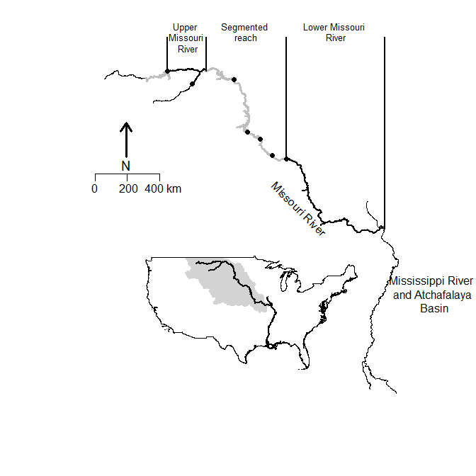

2 About the PSPAP
2.1 About the PSPAP
The Pallid Sturgeon Population Assessment Program (PSAPS) began in 2003. Current population assessment overview Background and implementation The PSPAP program began in 2003 Ramped up in xxx The Pallid Sturgeon
2.2 Spatial extent, grain, organization, and sampling
Missouri River pallid sturgeon recovery is limited to the upper and lower Missouri River segments, Recovery Priority Management Areas 2 and 4 respectively (Figure 1.1). These segments are The upper and lower Missouri River segments are xx km and xx km respectively (Table 1.1).
Segments within RPMAs (Table 1.1)
Bends within segments
The spatial grain of the monitoring program is the river bend, defined as {welker and drobish}. major segment. Within each segment, 25% of bends are randomly sampled annually. It is unclear whether a bend can be resampled the following year

Figure 1.1. Major Missouri River pallid sturgeon management units. The Pallid Sturgeon Population Assessment Program is implemented in the upper, segmented, and lower Missouri River.
Figure 1.2. Upper and lower Missouri River segments establishing the spatial extent of Missouri River pallid sturgeon recovery. Alternating gray and black line segments denote river bends that serve as the spatial grain and sampling unit for population and demographic estimates.
Table 1.1.
| RPMA (rkm start, stop) | Segment (rkm start,stop) | Bends |
|---|---|---|
| 1 | ||
| 2 | ||
Existing evaluations Other considerations Length, weight, Current assessment and AM The objectives are:
Fundamental Objective: Avoid jeopardizing the continued existence of the pallid sturgeon from the US Army Corps of Engineers actions on the Missouri River.
Sub-objective 1: Increase pallid sturgeon recruitment to age 1.
- Metrics: primary metric is catch rates of age 0 and age 1 pallid sturgeon;
- secondary metrics include model-based estimates of abundance of age 0 and age 1 pallid sturgeon, and the survival of hatchery and naturally reproducing fish to age 1.
Sub-objective 2: Maintain or increase numbers of pallid sturgeon as an interim measure until sufficient and sustained natural recruitment occurs.
Study objectives Pallid Sturgeon only…
The objectives of this study are to:
- provide potential approaches that will meet population objective
- feed into ongoing adaptive management
- build on or cross walk